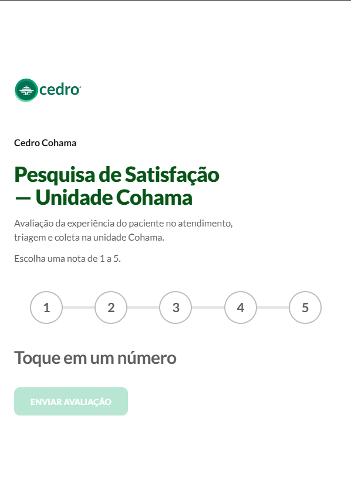
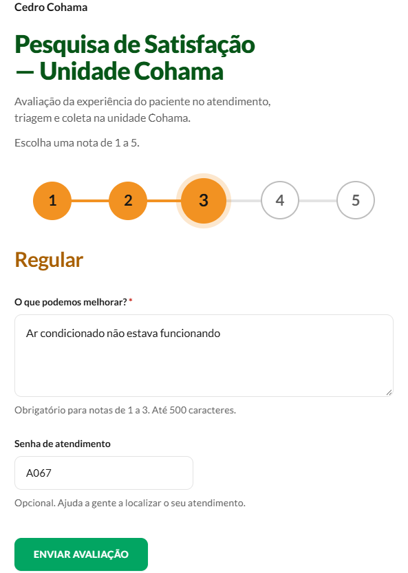
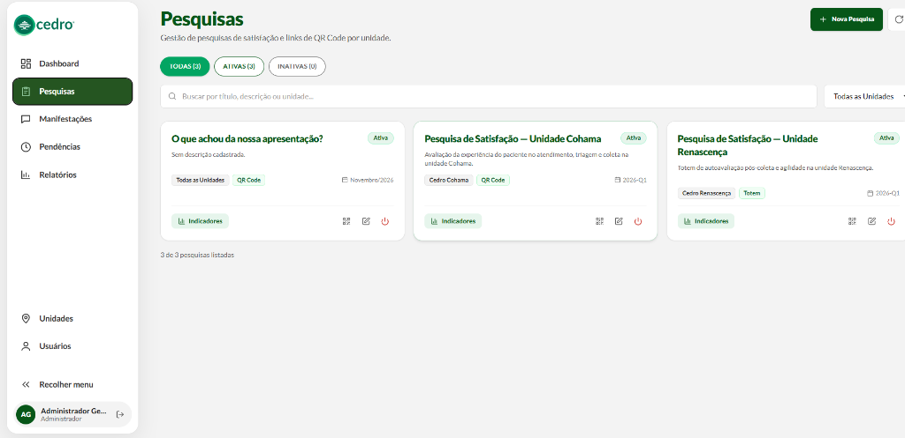
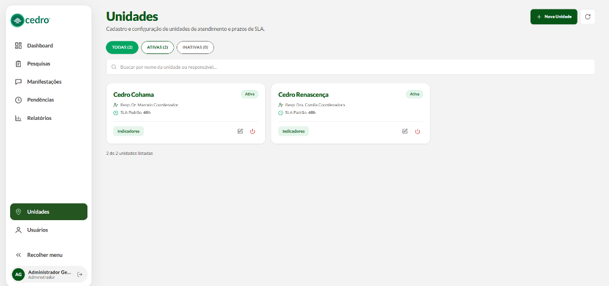
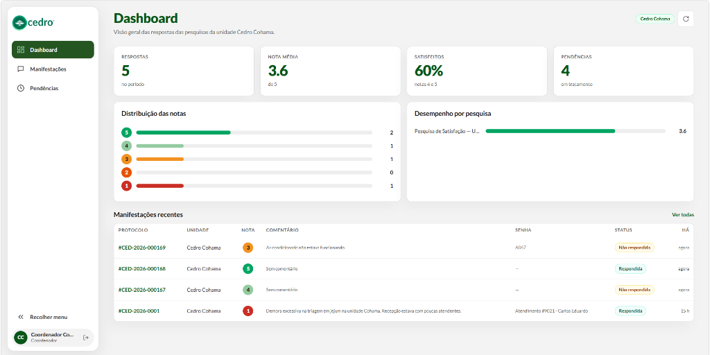
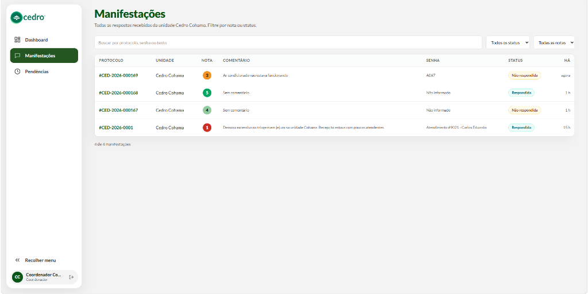
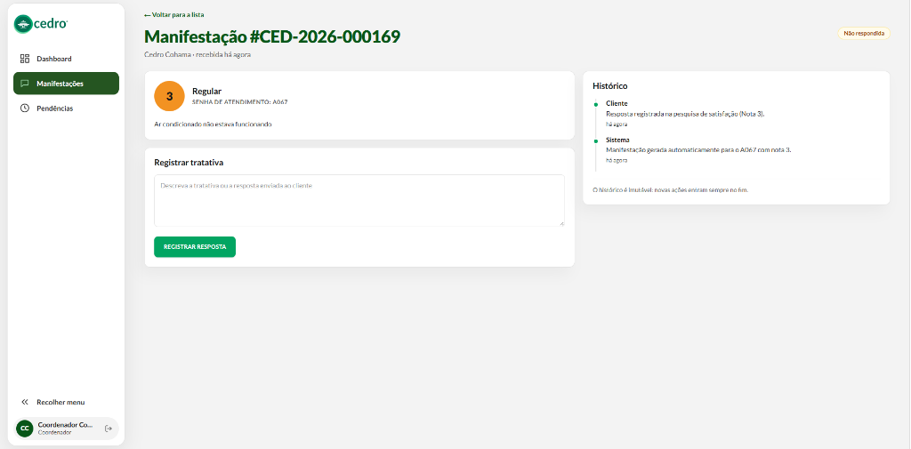
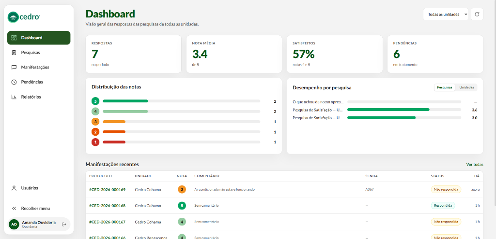
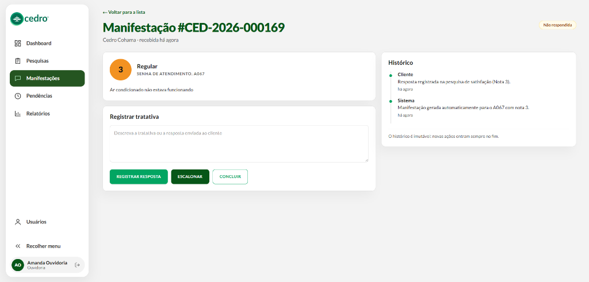

Plataforma de
Experiência do Cliente
Gestão Integrada de Ouvidoria, Pesquisa de Satisfação e Controle de Prazos para a rede Laboratório Cedro.
Desenvolvimento
Jornada Operacional do Caso
Do totem físico de coleta até o encerramento homologado pela Ouvidoria Central.
Paciente escaneia o QR Code na unidade, avalia o atendimento (1 a 5) e deixa comentários pelo celular.
Notas de detratores disparam a criação de Manifestação com prazo pré-configurado para a unidade.
O Coordenador acessa o caso, apura a ocorrência operacional e submete a proposta oficial de resolução.
A Ouvidoria analisa a qualidade do retorno. Se aprovado, conclui; se insuficiente, devolve compulsoriamente.
Tela de Avaliação do Paciente
Coleta mobile rápida e sem login nas unidades de atendimento.


- Acesso Direto: Avaliação rápida via celular sem exigir cadastro ou login.
- Comentário Obrigatório (Notas 1 a 3): Notas baixas ou regulares exigem o relato do ocorrido (ex: "Ar condicionado não estava funcionando").
- Senha de Atendimento (
A067): Campo opcional para localizar o guichê e horário do atendimento.
Acesso via QR Code
Aponte a câmera do celular para visualizar a tela de avaliação.
Avaliação Finalizada & Protocolo
Confirmação da nota atribuída, agradecimento e protocolo gerado.
- Nota e Agradecimento: Exibe a nota escolhida pelo paciente (3 de 5) e a mensagem de confirmação.
- Protocolo Automático: Gera na hora o código
CED-2026-000169para rastreabilidade do caso. - Envio Imediato para a Fila: A manifestação passa a constar instantaneamente nos painéis internos.
Acesso via QR Code
Aponte a câmera do celular para testar o envio da avaliação.
Administrador: Dashboard & Escopo de Atuação
Visão ampla de todas as pesquisas, relatórios e restrição operacional.
- Visão Ampla: Acompanha respostas, nota média e desempenho de todas as pesquisas e unidades.
- Gestão (CRUD): Cria, atualiza e desativa pesquisas, unidades e usuários.
- Relatórios: Gera e extrai relatórios gerenciais consolidados.
- Não Responde Manifestações: Bloqueado de registrar tratativas em nome das unidades.
- Sem Alteração de Status: Não escalona e não conclui chamados operacionais.
Administrador: CRUD de Pesquisas
Criação, atualização, inativação e geração de QR Codes por pesquisa.

- Criar e Atualizar: Cadastra novas pesquisas (
+ Nova Pesquisa), edita títulos, canais e períodos. - Ativar / Deletar: Controla quais formulários estão ativos na rede.
- QR Code e Indicadores: Gera o cartaz QR Code de cada pesquisa e consulta seus indicadores individuais.
Administrador: CRUD de Unidades & Relatórios
Cadastro de unidades, definição de coordenadores, prazos de SLA e relatórios.

- CRUD de Unidades: Cria, atualiza e desativa unidades de atendimento (ex: Cohama e Renascença).
- Responsável e SLA: Vincula o Coordenador da unidade e configura o prazo padrão (
48h). - Geração de Relatórios: Extrai relatórios comparativos entre unidades e pesquisas.
Coordenador: Visão Exclusiva da Sua Unidade
Visualiza apenas as pesquisas e indicadores respectivos à sua unidade.

- Apenas Sua Unidade: Visualiza somente dados e pesquisas da unidade vinculada (
Cedro Cohama). - Isolamento de Dados: Não possui seletor para ver outras unidades nem acesso a menus administrativos.
- Monitoramento Local: Acompanha nota média, satisfação e pendências da própria equipe.
Coordenador: Manifestações da Unidade
Acesso direto aos protocolos registrados pelos pacientes na unidade.

- Manifestações da Unidade: Lista todos os protocolos abertos na unidade com nota, relato e senha (
A067). - Filtros Rápidos: Busca por protocolo (
#CED-2026-000169), status ou nota atribuída. - Controle de Pendências: Destaca os casos Não respondidos para atuação dentro do prazo.
Coordenador: Responder ou Escalonar
Registro da resposta operacional da unidade ou escalonamento do caso.

- Responder Manifestação: Analisa a queixa do cliente e registra a tratativa realizada pela unidade.
- Escalonar: Pode escalonar ocorrências que dependam de alçada superior.
- Sem Conclusão Direta: Não pode encerrar o chamado por conta própria (exige validação da Ouvidoria).
Ouvidoria: Visão Geral, Pesquisas & Relatórios
Visualização global de pesquisas (sem CRUD) e extração de relatórios.

- Visão Geral das Pesquisas: Acompanha indicadores de todas as unidades, mas só consegue visualizar pesquisas (não cria nem edita).
- Visualizar e Extrair Relatórios: Acesso completo ao módulo de Relatórios para exportação de dados.
- Monitoramento de Filas: Supervisiona todas as manifestações e pendências da rede.
Ouvidoria: Resposta, Escalonamento & Conclusão
Registro de resposta do coordenador, escalonamento por atraso e conclusão oficial.

- Registrar Resposta: Visualiza a manifestação e pode registrar a resposta do coordenador.
- Escalonar: Caso não tenha sido respondida no prazo, aciona o escalonamento do chamado.
- Concluir: Homologa a tratativa e conclui oficialmente o protocolo.
Obrigado pela atenção!
Avalie agora nossa apresentação.
Aponte a câmera do seu celular para o QR Code ao lado e registre sua nota de 1 a 5 diretamente na nossa plataforma!